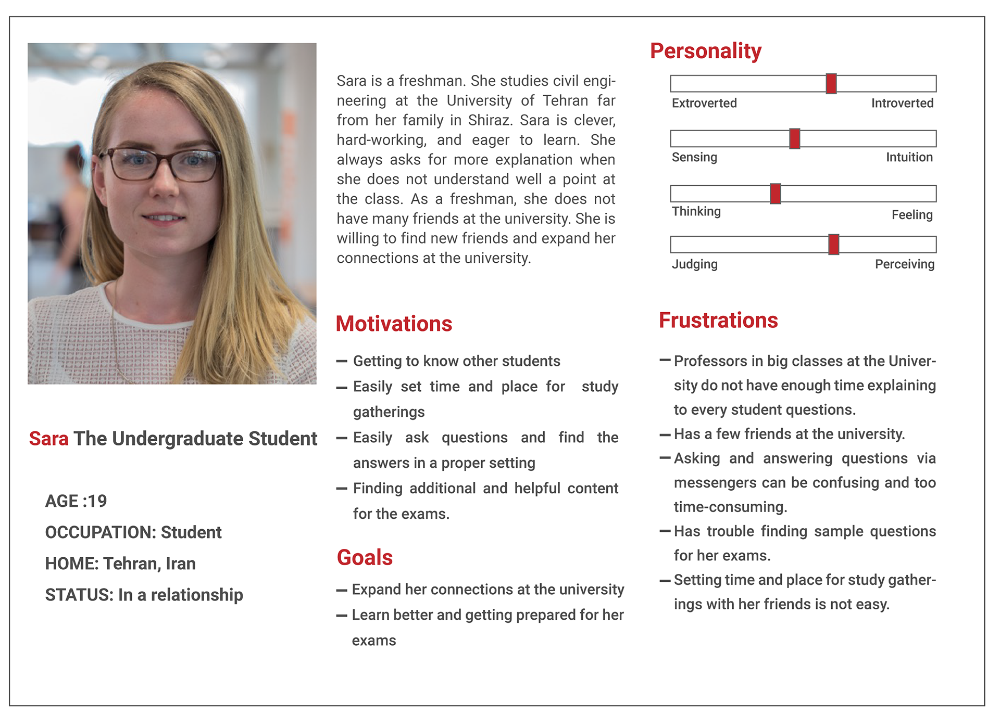
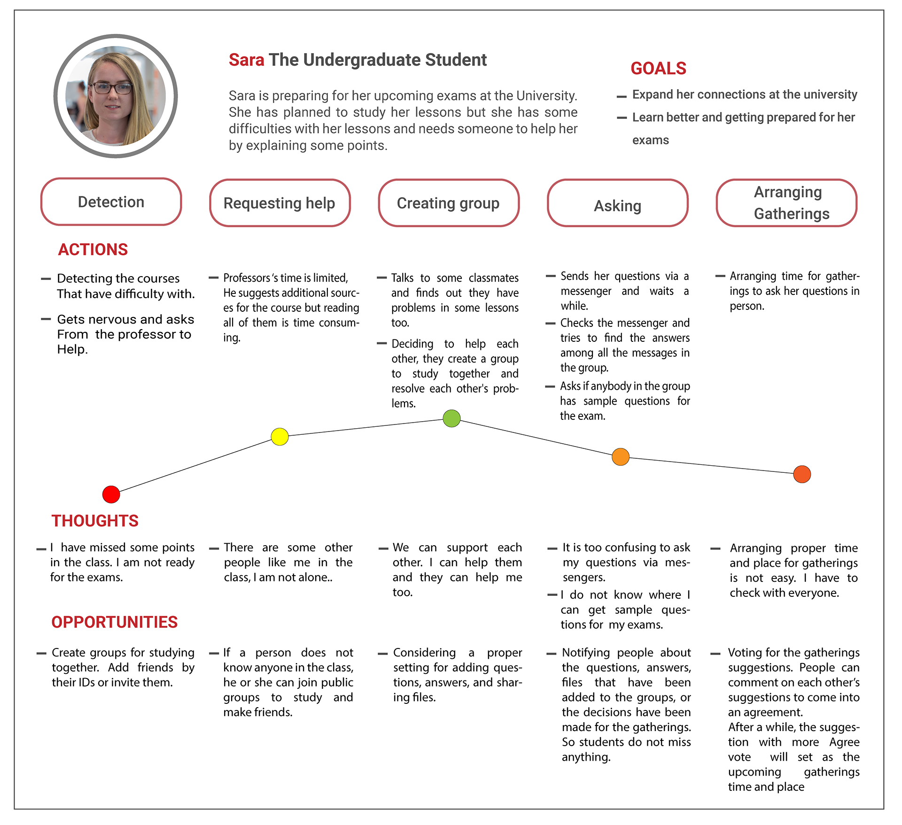

Problem Statement
In big classes at the universities, most of the time professors do not have enough time to solve all the students' problems. In these situations, students usually reach out to their classmates or ask each other for explaining the missed points. Students ususally prefer to arragnge gatherings to study together in person as asking questions and explaining through messengers and online platforms could be confusing or too time-consuming. However, arranging in-person gatherings is not easy too; it needs to be checked with everyone's plan and situation..
Introduction
The SudyMate app has made the process of studying and learning in groups easier. Students can invite their friends, create private and public groups, or join the existing public groups for studying. They can share files, ask their questions, and answer other's questions in a proper simple setting. In addition, with the help of a voting system, students can come into an agreement easier to arragnge the gatherings and express their ideas.
Design Process
I conducted user interviews in order to gain a better understanding of the users. I was actually a student at that moment, which presented a great opportunity to interview people in my target demographic. I talked to 7 people at the university campus to get their perspective on group studying.
My main research questions were to find out:
1. Whether participants have tried studying in a group and any difficulties they encountered
2. What are their motivations for studying in a group with other students
One way I tried to dig deeper into their thoughts was to ask them to describe a recent studying with friends experience. This was an indirect way to see what they value most about studying in a group as people feel more engaged when describing a past experience than answering questions without context.
Some useful insights I discovered:
1. Most participants expressed that they had difficulties with asking and answering questions through messengers, they preferred to gather with friends in person.
2. They said that studying with their classmates gives them this chance to know each other more and make friends.
3. Arranging the place and time for the gatherings is not easy. it should be checked with everyone's plan.
4. One participant declared when he explains the lessons for his friends, it actually helps himself to learn and remember important points too.
5. Another said that after helping others with their lessons, she feels good about herself.
Persona
With the insight gained from the interviews, I put together a persona to represent my target user.
User Journey Map
This user journey map for the Persona shows the current pain points with studying in a group. It presents opportunities where I can improve on the experience such as creating both private and public groups to meet others or arranging gatherings properly. This priority was not seen in competitor apps.
Wireframe

This wireframe shows the basic flow of the application
High Fidelity Mockups
These are some of the high fidelity mockups I created as the final deliverable for this phase

Demo Video